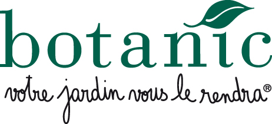
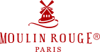
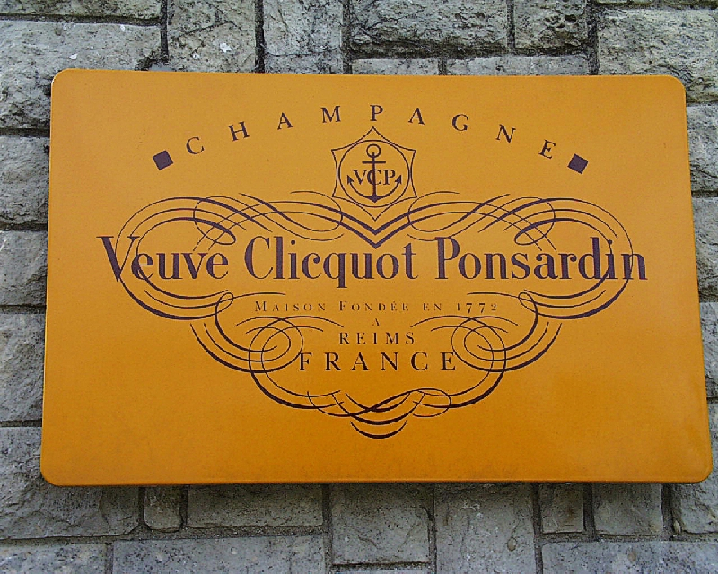
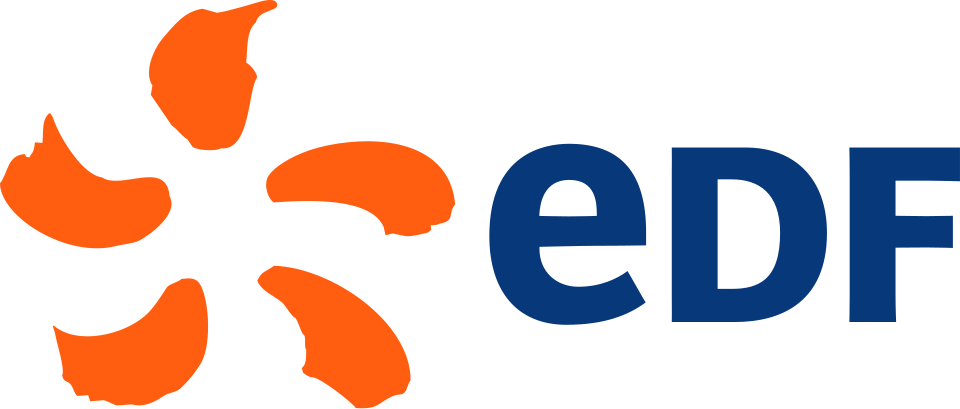
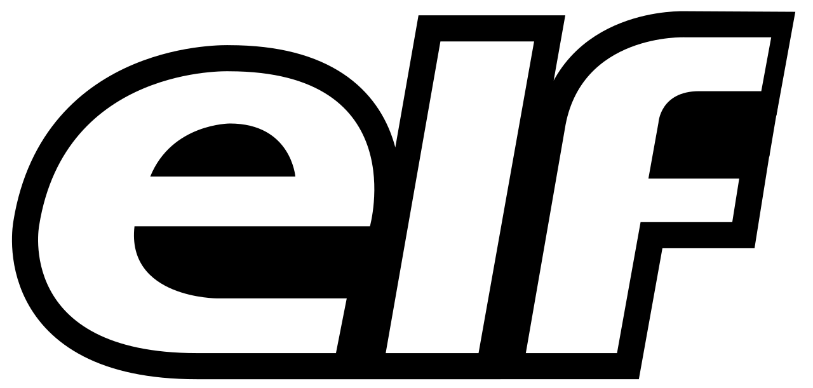
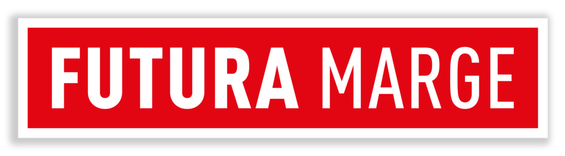

프랑스 브랜드 99
프랑스에서 시작한 브랜드 99개를 로고와 함께 모았습니다. 대표적인 프랑스 브랜드로는 에어 프랑스(Air France), 시트로엥(Citroën), 부가티(Bugatti Automobiles), TGV, 유비소프트(Ubisoft), 라코스테(Lacoste) 등이 있습니다. 수록 기준은 검수된 브랜드 설명이나 공식 웹사이트가 일치하는 위키데이터 개체에서 기원 국가가 확인된 경우로 한정했습니다.
다른 국가 보기
국가별 전체 →산업별로는 에너지·산업재 16개, 패션·럭셔리 14개, 식음료 14개, 미디어·엔터테인먼트 12개 순입니다. 설립연도가 확인된 브랜드는 89개이며 가장 오래된 곳은 1810년, 가장 최근은 2010년에 시작했습니다. 시기별로는 1900년 이전 18개, 1900~1949년 22개, 1950~1999년 36개, 2000년 이후 13개입니다. 수록 자료로는 로고 이미지 95개, 로고 변천 자료 13개, 연혁 타임라인 12개를 갖췄습니다. 이 가운데 93개는 공식 웹사이트가 일치하는 위키데이터 개체로 연결해 두었습니다.
프랑스 브랜드 목록
 까르띠에Cartier프랑스 · 1847년
까르띠에Cartier프랑스 · 1847년까르띠에(Cartier)는 1847년 파리에서 설립된 프랑스 럭셔리 주얼리·시계 메종이다.
 생 로랑Yves Saint Laurent프랑스 · 1961년
생 로랑Yves Saint Laurent프랑스 · 1961년생 로랑(Yves Saint Laurent)은 1961년 파리에서 설립된 프랑스 럭셔리 패션 하우스이다.
 지방시Givenchy프랑스 · 1952년
지방시Givenchy프랑스 · 1952년지방시(Givenchy)는 1952년 위베르 드 지방시가 설립한 프랑스 럭셔리 패션·향수 하우스이다.
 클럽메드CLUB MED프랑스 · 1950년
클럽메드CLUB MED프랑스 · 1950년클럽메드(Club Med)는 1950년 설립된 프랑스 기반의 올인클루시브 리조트·여행 브랜드이다.
돔 페리뇽(Dom Pérignon)은 프랑스 모엣 샹동이 생산하는 빈티지 프레스티지 퀴베 샴페인 브랜드이다.
몽클레르Moncler프랑스 · 1952년몽클레르(Moncler)는 1952년 프랑스에서 설립돼 현재 이탈리아에 본사를 둔 럭셔리 다운재킷 브랜드이다.
 모엣&샹동Moet & Chandon프랑스
모엣&샹동Moet & Chandon프랑스모엣&샹동(Moët & Chandon)은 1743년 프랑스 에페르네에서 설립된 세계적인 샴페인 하우스이다.
 반클리프 아펠Van Cleef & Arpels프랑스 · 1906년
반클리프 아펠Van Cleef & Arpels프랑스 · 1906년반클리프 아펠(Van Cleef & Arpels)은 1906년 파리 방돔 광장에서 설립된 프랑스 하이 주얼리 메종이다.
 라코스테Lacoste프랑스 · 1933년
라코스테Lacoste프랑스 · 1933년라코스테(Lacoste)는 악어 로고 폴로셔츠로 대표되는 프랑스의 의류 브랜드이다.
 리더프라이스Leader Price프랑스 · 1989년
리더프라이스Leader Price프랑스 · 1989년리더프라이스(Leader Price)는 자체상표(PB) 중심의 저가 식료품을 판매하는 프랑스 디스카운트 슈퍼마켓 체인이다.
 파타가스Pataugas프랑스 · 1950년
파타가스Pataugas프랑스 · 1950년파타가스(Pataugas)는 1950년 프랑스 바스크 지방에서 시작된 아웃도어·캐주얼 신발 브랜드이다.
 빅BIC프랑스 · 1945년
빅BIC프랑스 · 1945년빅(BIC)은 1945년 마르셀 비크가 프랑스에서 설립한 일회용 소비재 브랜드다.
까르푸Carrefour프랑스 · 1959년까르푸(Carrefour)는 유럽 최초로 하이퍼마켓 형태를 도입한 프랑스의 다국적 대형 유통업체이다.
 노즈Noz프랑스 · 1976년
노즈Noz프랑스 · 1976년노즈(Noz)는 파산·과잉재고 상품을 매입해 저가로 되파는 프랑스의 재고처리 할인 소매 체인이다.

보타닉Botanic프랑스 · 1995년보타닉(Botanic)은 친환경 정원용품·반려동물·유기농 식품을 취급하는 프랑스의 가든센터 체인이다.
 데카트론Decathlon프랑스 · 1976년
데카트론Decathlon프랑스 · 1976년데카트론은 1976년 프랑스 릴에서 출발한 스포츠용품 대형 소매·제조 기업으로, 다양한 종목의 장비와 의류를 한 매장에 모아 합리적 가격에…
 르크루제LE CREUSET프랑스 · 1925년
르크루제LE CREUSET프랑스 · 1925년르크루제(Le Creuset)는 1925년 프랑스에서 설립된 에나멜 주물 주방용품 브랜드다.
 생크5àsec프랑스 · 1968년
생크5àsec프랑스 · 1968년생크(5àsec)는 드라이클리닝과 세탁 서비스를 제공하는 프랑스의 세탁 프랜차이즈 체인이다.
 미니텔Minitel프랑스 · 1982년
미니텔Minitel프랑스 · 1982년미니텔(Minitel)은 프랑스의 통신 네트워크 서비스 및 이를 제공하는 단말기이다.
 푸조Peugeot프랑스 · 1810년
푸조Peugeot프랑스 · 1810년푸조(Peugeot)는 프랑스에 기반을 둔 자동차 제조 업체이다.
 부이그Bouygues프랑스 · 1952년
부이그Bouygues프랑스 · 1952년부이그(Bouygues)는 프랑스 파리에 본사를 둔 엔지니어링 그룹이다.
 끌로에Chloé프랑스 · 1952년
끌로에Chloé프랑스 · 1952년끌로에(Chloé)는 1952년 Gaby Aghion이 설립한 프랑스의 럭셔리 패션 하우스이다.
 루브르 박물관Louvre Museum프랑스
루브르 박물관Louvre Museum프랑스루브르 박물관(Louvre Museum)은 프랑스 파리의 중심가에 있는 국립 박물관이다.
 르노Renault프랑스 · 1898년
르노Renault프랑스 · 1898년르노(Renault)는 프랑스 최대의 자동차 제조회사이다.
 에비앙Evian프랑스 · 1829년
에비앙Evian프랑스 · 1829년에비앙(Evian)은 제네바호 남쪽 기슭의 Évian-les-Bains 인근 여러 수원에서 미네랄워터를 병에 담아 판매하는 프랑스 브랜드이다.
 오르세 미술관Musée d'Orsay프랑스 · 1986년
오르세 미술관Musée d'Orsay프랑스 · 1986년오르세 미술관(Musée d'Orsay)은 프랑스 파리의 센강 좌안에 있는 박물관이다.
 디올Christian Dior프랑스 · 1946년
디올Christian Dior프랑스 · 1946년디올(Christian Dior)은 프랑스의 패션 디자이너 Christian Dior가 1946년에 설립한 하이엔드 명품 패션 브랜드이다.
 오렌지Orange프랑스 · 1988년
오렌지Orange프랑스 · 1988년오렌지(Orange)는 파리 근교 이시레몰리노에 본사를 둔 프랑스의 다국적 통신 기업이다.
 알스톰Alstom프랑스 · 1928년
알스톰Alstom프랑스 · 1928년알스톰(Alstom)은 1928년 1월에 설립된 프랑스의 다국적 운송 및 발전 설비 제조 업체이다.
 빈치Vinci프랑스 · 1899년
빈치Vinci프랑스 · 1899년빈치(Vinci)는 1899년 Société Générale d'Entreprises라는 이름으로 설립된 프랑스의 건설·콘세션 기업이다.
 알핀 자동차Alpine프랑스 · 1955년
알핀 자동차Alpine프랑스 · 1955년알핀 자동차(Alpine)는 1955년 설립된 프랑스의 레이싱 및 스포츠카 제조업체이다.
 세포라Sephora프랑스 · 1969년
세포라Sephora프랑스 · 1969년세포라(Sephora)는 프랑스의 다국적 개인 관리 및 미용 제품 소매 기업이다.
 크레디 아그리콜Credit Agricole Group프랑스 · 2000년
크레디 아그리콜Credit Agricole Group프랑스 · 2000년크레디 아그리콜(Crédit Agricole Group)은 프랑스의 국제 은행 그룹이자 세계 최대의 협동조합형 금융기관이다.
 르그랑Legrand프랑스 · 1904년
르그랑Legrand프랑스 · 1904년르그랑(Legrand)은 프랑스 리모주에 본사를 둔 산업 그룹으로, 전기 및 디지털 건축 인프라 제품과 커넥티드 기기를 제조한다.
 심카Simca프랑스 · 1934년
심카Simca프랑스 · 1934년심카(Simca)는 1934년 피아트가 설립한 프랑스의 자동차 제조사이다.
 아코르Accor프랑스 · 1967년
아코르Accor프랑스 · 1967년아코르(Accor)는 호텔, 리조트, 휴양 시설을 소유·운영하고 프랜차이즈로 제공하는 프랑스의 다국적 호스피탈리티 기업이다.
 레미 마르탱Rémy Martin프랑스
레미 마르탱Rémy Martin프랑스레미 마르탱(Rémy Martin)은 1724년에 설립되어 프랑스 코냐크에 본사를 둔 코냑 생산·판매 기업이다.
 페르노리카Pernod Ricard프랑스 · 1975년
페르노리카Pernod Ricard프랑스 · 1975년페르노리카(Pernod Ricard)는 프랑스의 와인·증류주 기업이다.
 크로넨버그Kronenbourg Brewery프랑스
크로넨버그Kronenbourg Brewery프랑스크로넨버그(Kronenbourg Brewery)는 1664년 신성 로마 제국의 자유제국도시 스트라스부르에서 Geronimus Hatt가 세운…
 다논Danone프랑스 · 1919년
다논Danone프랑스 · 1919년다논(Danone)은 프랑스 파리에 본사를 둔 다국적 식음료 기업이다.
 비방디Vivendi프랑스 · 1987년
비방디Vivendi프랑스 · 1987년비방디(Vivendi)는 프랑스 파리에 본사를 둔 다국적 미디어 그룹이다.
 아케마Arkema프랑스 · 2004년
아케마Arkema프랑스 · 2004년아케마(Arkema)는 프랑스에 본사를 둔 상장 다국적 특수소재 기업이다.
 BNP 파리바BNP Paribas프랑스 · 2000년
BNP 파리바BNP Paribas프랑스 · 2000년BNP 파리바(BNP Paribas)는 프랑스 파리에 본점을 둔 프랑스 최대 은행 그룹이다.
 슈나이더 일렉트릭Schneider Electric프랑스 · 1836년
슈나이더 일렉트릭Schneider Electric프랑스 · 1836년슈나이더 일렉트릭(Schneider Electric)은 1836년 설립된 프랑스의 다국적 기업으로, 여러 산업군에 에너지 관리와 자동화 통합…
 케링Kering프랑스 · 1962년
케링Kering프랑스 · 1962년케링(Kering)은 프랑스 파리에 본사를 둔 다국적 럭셔리 패션 그룹이다.
 데일리모션Dailymotion프랑스 · 2005년
데일리모션Dailymotion프랑스 · 2005년데일리모션(Dailymotion)은 프랑스의 온라인 동영상 공유 플랫폼이다.
 캡제미니Capgemini프랑스 · 1967년
캡제미니Capgemini프랑스 · 1967년캡제미니(Capgemini)는 프랑스 파리에 본사를 둔 다국적 정보기술 서비스 및 컨설팅 기업이다.
 셀린Celine프랑스 · 1945년
셀린Celine프랑스 · 1945년셀린(Celine)은 1945년 Céline Vipiana가 창업한 프랑스의 럭셔리 패션 하우스이다.
전체 목록

물랭 루주 Moulin Rouge물랭 루주(Moulin Rouge)는 1889년에 만들어진 파리 몽마르트르에 있는 카바레이다.
뵈브 클리코 Veuve Clicquot뵈브 클리코(Veuve Clicquot)는 1772년 프랑스 랭스에서 설립된 샴페인 하우스로, 세계에서 가장 큰 샴페인 생산자 중 하나이다.
프랑스 전력공사 Électricité de France프랑스 전력공사(Électricité de France)는 프랑스 정부가 대주주인 전력회사로, 프랑스와 해외에서 전력을 생산하고 고객에게 공급·수출한다.
ElfElf(엘프)는 프랑스의 석유·연료 브랜드로, 1965년 12월 3개 국영 석유회사가 합병해 형성된 ERAP를 모태로 1967년 4월 통합 브랜드로 출범했다.
Futura et MargeFutura et Marge는 프랑스의 미디어·엔터테인먼트 브랜드로, 콘텐츠 포맷, 팬덤, 채널 운영, 지식재산권 확장이 함께 작동하는 영역입니다.